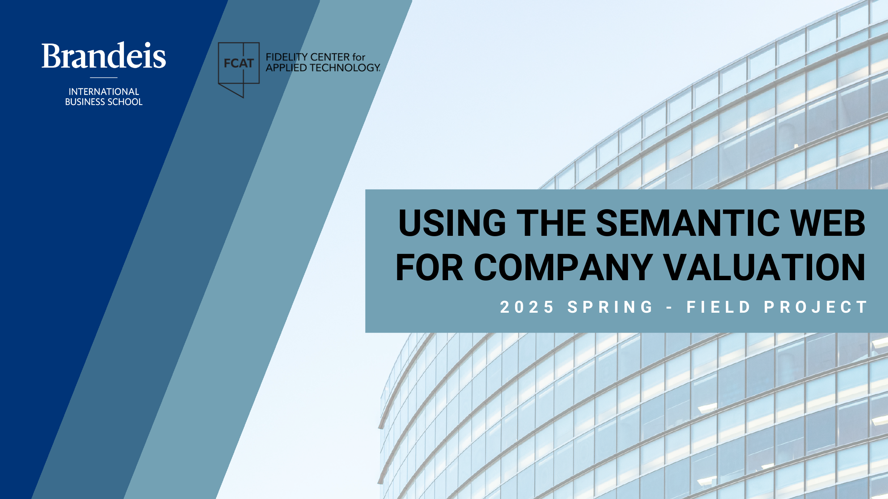
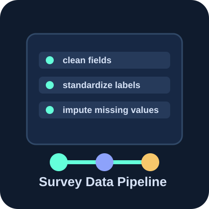
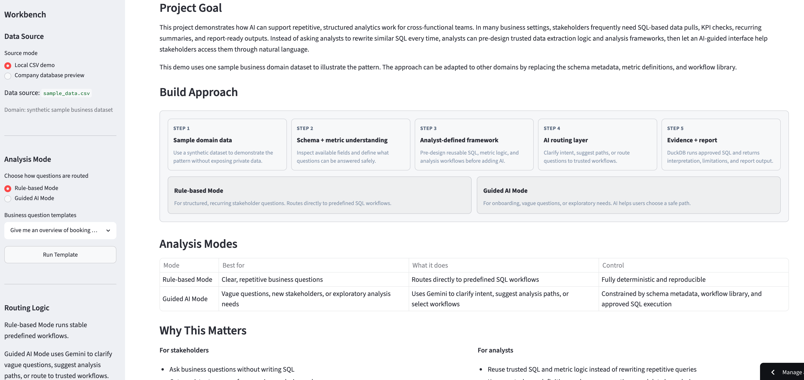

Projects
Selected analytics and prototype work, with supporting project pages or artifacts where available.
Credit risk modeling
Loan Default Risk Modeling Dashboard ↗
End-to-end analytics project with EDA, model comparison, feature importance, and risk interpretation.
PythonScikit-learnEDARisk modeling

Field project with Fidelity
Semantic Web Valuation Prototype App ↗
Prototype concept exploring how semantic web structures could support valuation workflows.
Semantic WebValuationPrototype appProduct research

Survey analytics
Chicago Student Survey Cleaning & ML Imputation ↗
Structured a messy survey export with deterministic cleaning and Random Forest imputation.
PythonPandasRandom ForestData cleaning

AI analytics product
AI Data Analyst Workbench ↗
Governed AI workflow for self-serve analytics with SQL evidence and executive-ready reports.
PythonStreamlitDuckDBGemini API